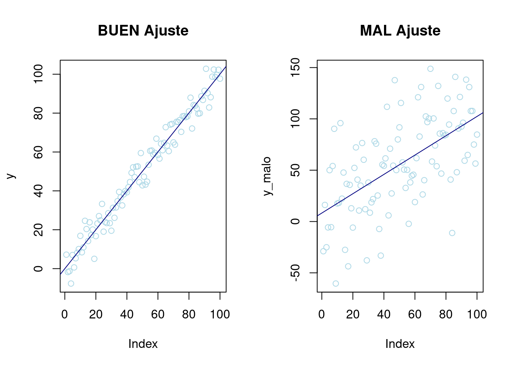

library(readxl) # Para leer los excels
library(kableExtra) # Para dar formato a las tablas html
library(knitr) # Formato tablas en html
library(gridExtra) # Para el layout de los gráficos
library(car) # Para el bonfferroni test
library(corrplot) # Para el gráfico de correlaciones
library(ggplot2)
library(lmtest) # Test Homocedasticidad
library(caret) # Para crear partición
library(dplyr) # Filtrar datosRegresión Lineal: matrimonios_reg
Introducción
En este notebook se expondrá como llevar a cabo una Regresión Lineal a partir de un conjunto de datos, explicando las hipótesis que se deben satisfacer y un posterior análisis de bondad del modelo. Por último se explicará como utilizar el modelo creado para predecir nuevas observaciones.
dataset
En este cuaderno vamos a analizar el dataset llamado matrimonios_reg.xlsx. Se quiere predecir el número de matrimonios en las ciudades españolas (de entre 50.000 y 300.000 habitantes) a partir del número de mujeres que las habitan y el número de nacimientos que ha habido ese año. Concretamente, se han tomado los datos relativos a 2022. Este análisis parece razonable a simple vista ya que el matrimonio la mayor parte de las veces va a acompañado de un nacimiento en los meses anteriores o posteriores. Los datos han sido extraídos de la Operación 8867 Movimiento Natural de la Población (IOE 8867), que se encuentra dentro de la temática Demografía y Población. Ha sido necesario un preprocesado para adaptar los datos a los fines de este estudio, que puede ser encontrado en Limpieza de datos
Concretamente tenemos las siguientes variables:
- Municipios: Códigos de los municipios.
- Ciudad: Nombres de los municipios.
- Matrimonios: Número de matrimonios en cada municipio.
- Mujeres: Número total de habitantes mujeres en cada municipio.
- Nacimientos:Número de nacimientos en cada municipio.
- Total: Número total de habitantes en cada municipio.
Descripción del trabajo a realizar
Elaborar una regresión lineal que explique la variable Matrimonios en función de Nacimientos y Mujeres. Interpretar y ver si incluir todas variables o no.
1. Análisis exploratorio.
2. Plantear las hipótesis de una regresión (incluyendo todas variables).
3. Analizar el modelo planteado y su ajuste de bondad.
4. Comprobar hipótesis de regresión.
5. Conclusión.
Análisis Exploratorio (EDA)
EDA viene del Inglés Exploratory Data Analysis y son los pasos relativos en los que se exploran las variables para tener una idea de que forma toma el dataset.
Cargar Librerías
Lo primero de todo vamos a cargar las librerías necesarias para ejecutar el resto del código del trabajo:
Lectura datos
Ahora cargamos los datos del excel correspondientes a la pestaña “Datos” y vemos si hay algún NA o algún valor igual a 0 en nuestro dataset. Vemos que no han ningún NA (missing value) en el dataset luego no será necesario realizar ninguna técnica para imputar los missing values o borrar observaciones.
data <- read_excel("../../../files/matrimonios_reg.xlsx", sheet = "Datos")c(
anyNA(data), # Any missing data
any(data == 0)
) # Any value equal to 0[1] FALSE FALSENo hay ningún NA leugo no será necesario escalar imputar ningún valor.
Análisis
Realizando un resumen numérico vemos que todas las variables toman valores mayores que 0 y con un máximo dependiendo de la naturaleza de la variable.
summary_stats <- function(data) {
# Filtra solo las columnas numéricas del dataframe
num_data <- data[, sapply(data, is.numeric)]
# Calcula las estadísticas descriptivas para cada columna
stats <- sapply(num_data, function(col) {
c(
Min = format(round(min(col, na.rm = TRUE), 2), nsmall = 2),
Q1 = format(round(quantile(col, 0.25, na.rm = TRUE), 2), nsmall = 2),
Mean = format(round(mean(col, na.rm = TRUE), 2), nsmall = 2),
Median = format(round(median(col, na.rm = TRUE), 2), nsmall = 2),
Q3 = format(round(quantile(col, 0.75, na.rm = TRUE), 2), nsmall = 2),
Max = format(round(max(col, na.rm = TRUE), 2), nsmall = 2)
)
})
# Transpone el resultado y conviértelo en un dataframe
result <- as.data.frame(t(stats))
# Agrega una columna con los nombres de las variables
result <- cbind(variable = rownames(result), result)
# Establece los nombres de las columnas
colnames(result) <- c("variable", "Min", "Q1", "Mean", "Median", "Q3", "Max")
return(result)
}
# Ejemplo de uso con un data frame 'df'
# Reemplaza 'df' con el nombre de tu data frame
result_df <- summary_stats(data)
# Convierte la salida a una tabla utilizando kable
kable(result_df, format = "pipe", caption = "Table showing the measures of interest.")# Histogram Matrimonios
histogram <- ggplot(data, aes(x = Matrimonios)) +
geom_histogram(fill = "deepskyblue2", color = "navy", bins = 5) +
labs(title = "Histogram of Matrimonios", x = "Matrimonios", y = "Frequency") +
theme_minimal(base_size = 8)
# Box Plot Matrimonios
boxplot <- ggplot(data, aes(x = "d", y = Matrimonios)) +
geom_boxplot(fill = "deepskyblue2", color = "navy") +
stat_boxplot(geom = "errorbar", width = 0.2) +
labs(title = "Box Plot of Matrimonios", x = "", y = "Matrimonios") +
theme_minimal(base_size = 8) +
theme(
axis.title.x = element_blank(),
axis.text.x = element_blank(),
axis.ticks.x = element_blank()
)
# Histogram Mujeres
histogram2 <- ggplot(data, aes(x = Mujeres)) +
geom_histogram(fill = "deepskyblue2", color = "navy", bins = 5) +
labs(title = "Histogram of Mujeres", x = "Mujeres", y = "Frequency") +
theme_minimal(base_size = 8)
# Box Plot Mujeres
boxplot2 <- ggplot(data, aes(x = "d", y = Mujeres)) +
geom_boxplot(fill = "deepskyblue2", color = "navy") +
stat_boxplot(geom = "errorbar", width = 0.2) +
labs(title = "Box Plot of Mujeres", x = "", y = "Mujeres") +
theme_minimal(base_size = 8) +
theme(
axis.title.x = element_blank(),
axis.text.x = element_blank(),
axis.ticks.x = element_blank()
)
# Histogram Nacimientos
histogram3 <- ggplot(data, aes(x = Nacimientos)) +
geom_histogram(fill = "deepskyblue2", color = "navy", bins = 5) +
labs(title = "Histogram of Nacimientos", x = "Nacimientos", y = "Frequency") +
theme_minimal(base_size = 8)
# Box Plot Nacimientos
boxplot3 <- ggplot(data, aes(x = "d", y = Nacimientos)) +
geom_boxplot(fill = "deepskyblue2", color = "navy") +
stat_boxplot(geom = "errorbar", width = 0.2) +
labs(title = "Box Plot of Nacimientos", x = "", y = "Nacimientos") +
theme_minimal(base_size = 8) +
theme(
axis.title.x = element_blank(),
axis.text.x = element_blank(),
axis.ticks.x = element_blank()
)
# Histogram Total
histogram4 <- ggplot(data, aes(x = Total)) +
geom_histogram(fill = "deepskyblue2", color = "navy", bins = 5) +
labs(title = "Histogram of Total", x = "Total", y = "Frequency") +
theme_minimal(base_size = 8)
# Box Plot Total
boxplot4 <- ggplot(data, aes(x = "d", y = Total)) +
geom_boxplot(fill = "deepskyblue2", color = "navy") +
stat_boxplot(geom = "errorbar", width = 0.2) +
labs(title = "Box Plot of Total", x = "", y = "Total") +
theme_minimal(base_size = 8) +
theme(
axis.title.x = element_blank(),
axis.text.x = element_blank(),
axis.ticks.x = element_blank()
)
# Arrange plots vertically
grid.arrange(histogram, boxplot, histogram2, boxplot2, histogram3, boxplot3, histogram4, boxplot4, nrow = 2, ncol = 4, widths = c(0.3, 0.2, 0.3, 0.2))Regresión Lineal
Una Regresión Lineal es una técnica estadística que busca ajustar un conjunto de datos a una recta. Es decir, dada una observación x, se proyecta sobre la recta y se obtiene un valor y, de tal manera que si el ajuste por regresión es bueno entonces la \(\hat{y}\) obtenida se parece mucho al valor real \(y\).
Antes de explicar las hipótesis que deben cumplir los datos para que el ajuste y como llevarlo a cabo, se va a mostrar un ejemplo de buen y mal ajuste. Intuitivamente cuanto mejor sea el ajuste de los datos a una recta cuando se representen las observaciones en un gráfico, mejor será el ajuste.
par(mfrow = c(1, 2)) # Dos gráficos misma fila
# Poca variabilidad
x <- seq(1, 100, 1)
y <- rnorm(100, x, 5)
p1 <- plot(y, col = "lightblue", main = "BUEN Ajuste") + abline(lm(y ~ x), col = "navy")
# Mucha variabilidad
x_malo <- seq(1, 100, 1)
y_malo <- rnorm(100, x, 35)
p2 <- plot(y_malo, col = "lightblue", main = "MAL Ajuste") + abline(lm(y_malo ~ x_malo), col = "navy")
Hipótesis y indicadores de bondad
Para que una regresión lineal proporcione un buen ajuste a los datos debe cumplir una serie de requisitos que por tanto deben ser verificados al llevar a cabo el estudio. Recordar que la regresión lineal se expresa como: \[ \mathbf{Y}=\mathbf{X} \boldsymbol{\beta}+\boldsymbol{\varepsilon} \] donde \(\mathbf{Y}\) es la variable respuesta, \(\mathbf{X}\) los predictores (hay \(k\) variables predictoras), \(\boldsymbol{\beta}\) los coeficientes de la regresión y \(\boldsymbol{\varepsilon}\) el error. \[ \mathbf{Y}=\left[\begin{array}{c} y_1 \\ y_2 \\ \vdots \\ y_n \end{array}\right] \quad \mathbf{X}=\left[\begin{array}{cccc} 1 & x_{11} & \ldots & x_{1 k} \\ 1 & x_{21} & \ldots & x_{2 k} \\ \vdots & \ddots & \vdots & \\ 1 & x_{n 1} & \ldots & x_{n k} \end{array}\right] \quad \boldsymbol{\beta}=\left[\begin{array}{c} \beta_0 \\ \beta_1 \\ \vdots \\ \beta_k \end{array}\right] \quad \boldsymbol{\varepsilon}=\left[\begin{array}{c} \varepsilon_1 \\ \varepsilon_2 \\ \vdots \\ \varepsilon_n \end{array}\right] \] Las hipótesis que se deben cumplir son:
Linealidad: La media de la respuesta es función lineal de los predictores. En términos matemáticos: \[E\left[\mathbf{Y} \mid \mathbf{X}_1=x_1, \ldots, \mathbf{X}_k=x_k\right]=\beta_0+\beta_1 x_1+\ldots+\beta_k x_k \]
Independencia de errores: Los errores \(\varepsilon_i\) deben ser independientes, es decir, \(Cov[\varepsilon_i,\varepsilon_j] =0, \; \forall i\neq j\).
Homocedasticidad: La varianza del error debe ser constante.
\[Var\left[\varepsilon_i \mid \mathbf{X}_1=x_1, \ldots, \mathbf{X}_k=x_k\right]=\sigma^2 \quad \forall \;i \]
- Normalidad : Los errores deben estar distribuidos normalmente, es decir, \(\varepsilon_i \sim N(0,\sigma^2)\; \forall i\).
Para analizar la bondad, hay algunos indicadores como el Coeficiente de Determinación o \(R^2\) que representa el porcentaje de variabilidad de la variable respuesta que es capaz de explicar el modelo. Es decir, si toma valor 1 hay una dependencia lineal exacta entre los predictores y la variable respuesta y por tanto las predicciones serán perfectas. Por el contrario, si toma valor 0 habrá que desechar el modelo puesto que no es capaz de predecir con nada de exactitud.
En caso de que haya más de un predictor (\(k >1\), Regresión Lineal Múltiple), es más recomendable usar el Coeficiente de Determinación Ajustado \(R^2\_adj\) como indicador de bondad, pues el \(R^2\) puede inflarse artificialmente debido a la presencia de varios predictores. Su interpretación es similar.
Modelo
En este caso nos encontramos ante una Regresión Lineal Múltiple puesto que tenemos más de una variable predictora. Inicialmente vamos a considerar un modelo con todas variables predictoras para intentar predecir Nacimientos y veremos si este modelo cumple las hipótesis necesarias y cuan bueno es.
set.seed(785248)
# 80%/20% train/test pariticion
trainIndex <- createDataPartition(data$Matrimonios, list = FALSE, p = 0.8)
data_train <- data[trainIndex, ]
data_test <- data[-trainIndex, ]
# Modelo inicial
lm1 <- lm(Matrimonios ~ Nacimientos + Mujeres, data = data_train)
lm1
Call:
lm(formula = Matrimonios ~ Nacimientos + Mujeres, data = data_train)
Coefficients:
(Intercept) Nacimientos Mujeres
28.364455 -0.008467 0.006424 summary(lm1)
Call:
lm(formula = Matrimonios ~ Nacimientos + Mujeres, data = data_train)
Residuals:
Min 1Q Median 3Q Max
-163.460 -33.633 -7.279 30.070 154.947
Coefficients:
Estimate Std. Error t value Pr(>|t|)
(Intercept) 28.3644547 10.8801761 2.607 0.0104 *
Nacimientos -0.0084675 0.0324383 -0.261 0.7946
Mujeres 0.0064237 0.0004282 15.002 <2e-16 ***
---
Signif. codes: 0 '***' 0.001 '**' 0.01 '*' 0.05 '.' 0.1 ' ' 1
Residual standard error: 54.78 on 106 degrees of freedom
Multiple R-squared: 0.937, Adjusted R-squared: 0.9358
F-statistic: 788.6 on 2 and 106 DF, p-value: < 2.2e-16A primera vista vemos un valor de Múltiple R-squared: 0.93, lo cual es bastante alto y por tanto nuestro modelo parece capturar bien la variabilidad de la variable respuesta, concretamente un \(93\%\). Sin embargo, en los sucesivos modelos que planteemos no podemos usar como criterio de comparación el \(R-squared\) pues aumenta a la vez que lo hace el número de variables, y por tanto para comparar modelos entre si se debe usar el Adjusted R-squared (que tiene en cuenta el número de variables).
En la línea de los residuos no parece haber contraindicaciones a que estos sigan una distribución normal centrada en cero puesto que tenemos unas medidas de dispersión bastante simétricas. No obstante, más adelante se procederán a hacer los test pertinentes.
En la última linea se lleva a cabo un Test de Significación Global \(F-Test\) lo que considera es la hipótesis nula de
\[H_0: \beta_i =0\; \forall i \\ H_1: al\; menos \; un \; \beta_i \neq 0\].
Para un nivel de confianza de \(0.95\) podemos rechazar la hipótesis nula (puesto que p_val< 0.05) y por tanto aceptar la alternativa, lo cual es buena señal.
No obstante es necesario analizar que se cumplan las hipótesis iniciales para poder asegurar que estamos ante un buen modelo.
Test de Bonferroni (datos atípicos)
La idea principal es verificar si los residuos de las observaciones son significativamente diferentes de cero. Si un residuo tiene un valor “studentizado” grande en comparación con una distribución t, puede considerarse como un posible valor atípico. Esto se debe a que teóricamente se demuestra que los residuos “studentizados” \(r^* _i \sim t_{n-k-1}\) con k el número de predictores. En este caso parece haber indicación de sólo un valor atípico.
aa <- outlierTest(lm1)
outlierTest(lm1)No Studentized residuals with Bonferroni p < 0.05
Largest |rstudent|:
rstudent unadjusted p-value Bonferroni p
23 -3.336085 0.0011755 0.12813Test homocedasticidad
En términos sencillos, la Prueba de Breusch-Pagan evalúa si la varianza de los errores en un modelo de regresión es constante o si varía a lo largo de los valores de las variables predictoras. Una violación de la homocedasticidad puede afectar la validez de las inferencias realizadas a partir del modelo.
El test funciona de la siguiente manera: se obtienen los residuos al cuadrado y se realiza una regresión auxiliar para determinar si hay una relación significativa entre los residuos al cuadrado y las variables predictoras. Si se encuentra evidencia significativa, puede indicar la presencia de heterocedasticidad.
bptest(Matrimonios ~ Nacimientos + Mujeres, data = data_train, varformula = ~ fitted.values(lm1), studentize = FALSE)
Breusch-Pagan test
data: Matrimonios ~ Nacimientos + Mujeres
BP = 11.687, df = 1, p-value = 0.0006294\[H_0: Var[\varepsilon_i ] =\sigma^2 \; \forall \;i \\ H_1: Var[\varepsilon_i ] \neq \sigma^2 \; \forall \;i\].
Si el valor p obtenido de la prueba de Breusch-Pagan es \(<0.05\), interpretaríamos esto como evidencia suficiente para rechazar la hipótesis nula de homocedasticidad (a nivel de significancia de \(0.05\)). En otras palabras, tendríamos suficiente evidencia estadística para decir que hay heterocedasticidad en los errores del modelo de regresión.
En términos prácticos, esto sugiere que la varianza de los errores parece no ser constante a lo largo de los valores de las variables predictoras.
Normalidad de residuos
El Test de Shapiro es una prueba de normalidad que se utiliza para evaluar si una muestra proviene de una población con una distribución normal. La hipótesis nula del test es que la muestra sigue una distribución normal. Si el valor p obtenido en la prueba es menor que el nivel de significancia (comúnmente establecido en \(0.05\)), se rechaza la hipótesis nula, indicando que la muestra no sigue una distribución normal.
\[H_0: \varepsilon_i \sim N(\;,\;) \; \forall \\ H_1: \varepsilon_i \nsim N(\;,\;) \; \forall \].
shapiro.test(lm1$residuals)
Shapiro-Wilk normality test
data: lm1$residuals
W = 0.98659, p-value = 0.3493Aceptamos la normalidad de los residuos puesto que el \(p-value>0.05\).
Test linealidad
La hipótesis alternativa analiza si la inclusión de términos cuadráticos (potencia 2) de las variables predictoras mejora significativamente el modelo en comparación con un modelo que solo incluye términos lineales.
resettest(Matrimonios ~ Nacimientos + Mujeres, data = data_train, power = 2, type = "regressor")Hay evidencia significativa de que el modelo Matrimonios ~ Nacimientos + Mujeres está mal especificado. Esto sugiere que podría faltar algún término no lineal o interacción en el modelo, o que se deben incluir variables adicionales para capturar correctamente la relación entre Matrimonios, Nacimientos y Mujeres.
Por ejemplo, se podría modificar el modelo para incluir términos no lineales y de interacción:
modelo_mejorado <- lm(Matrimonios ~ Nacimientos + I(Nacimientos^2) + Mujeres + I(Mujeres^2) + Nacimientos:Mujeres, data = data_train)
summary(modelo_mejorado)
Call:
lm(formula = Matrimonios ~ Nacimientos + I(Nacimientos^2) + Mujeres +
I(Mujeres^2) + Nacimientos:Mujeres, data = data_train)
Residuals:
Min 1Q Median 3Q Max
-115.010 -36.734 -1.545 31.532 143.208
Coefficients:
Estimate Std. Error t value Pr(>|t|)
(Intercept) -4.111e+01 2.595e+01 -1.584 0.1162
Nacimientos 1.905e-01 9.239e-02 2.062 0.0417 *
I(Nacimientos^2) -2.063e-04 1.276e-04 -1.617 0.1089
Mujeres 6.140e-03 1.392e-03 4.411 2.54e-05 ***
I(Mujeres^2) -1.760e-08 1.799e-08 -0.978 0.3302
Nacimientos:Mujeres 2.964e-06 2.945e-06 1.007 0.3165
---
Signif. codes: 0 '***' 0.001 '**' 0.01 '*' 0.05 '.' 0.1 ' ' 1
Residual standard error: 52.42 on 103 degrees of freedom
Multiple R-squared: 0.944, Adjusted R-squared: 0.9412
F-statistic: 346.9 on 5 and 103 DF, p-value: < 2.2e-16Gráfico de influencia del modelo porpuesto
En el siguiente gráfico se muestran los residuos “studentizados”, es decir, los residuos transformados a una \(N(0,1)\). Es por ello, que debido a el cuantil \(z_{\alpha/2}=-1.96\; con \; \alpha=0.05\) de una normal, sabemos que el \(95\%\) de elementos deben estar contenidos en \((-1,96,1.96)\) que son las rayas horizontales del gráfico.
influencePlot(lm1, id = list(method = "noteworth", n = 2))- Los residuos bajo hipótesis de RLM siguen una N(0,sigma) y los “studentizados” un N(0,1), es decir el \(95\%\) de datos están entre \((-1.96,1.96)\), las líneas horizontales. Tenemos varios datos fuera de la línea lo que a priori podría ser un problema
- Las líneas verticales indican los datos con apalancamiento en el modelo.
- El área de las burbujas es proporcional a la Distancia de Cook (mide cómo cambian los parámetros del modelo cuando se excluye una observación específica). Vemos que hay uno con una gran distancia de cook (tienen residuo grande), luego esto nos indica que podría considerarse en cierto modo atípico.
Colinealidad
Cuando los regresores no tienen una relación lineal, se consideran ortogonales. Sin embargo, en la mayoría de las aplicaciones de regresión, los regresores no cumplen con esta condición. En algunos casos, la falta de ortogonalidad no representa un problema significativo, pero en otros, los regresores pueden estar tan estrechamente relacionados linealmente de manera que las predicciones del modelo de regresión se vuelven poco fiables o incorrectas.
Este fenómeno, en el que los regresores presentan dependencias lineales casi perfectas, se conoce como el problema de colinealidad. Se realiza la matriz de correlaciones para ver la dependencia lineal entre las distintas variables.
mat_cor <- cor(data[, 3:5]) %>% round(digits = 2)
corrplot(mat_cor, type = "upper", order = "hclust", tl.col = "black", tl.srt = 45)Combinando los resultados de la matriz anterior y el conocimiento de las variables es posible identificar variables que podrían generar el problema de multicolinealidad. Es por ello que se puede optar por suprimir uno de los dos predictores.
Por otro lado, el factor de inflación de la varianza (FIV) detecta si una variable independiente es colineal con el resto. Es decir, mira cuanto se infla la varianza de los estimadores por culpa de la colinealidad de unas variables respecto a otras. Decisión: Un Valor del FIV mayor de 10 requiere actuación.
# Inflación de la varianza
vif(lm1)Nacimientos Mujeres
7.239639 7.239639 Vemos que puede haber problema de multicolinealidad.
Selección de Modelos
A la hora de realizar un modelo de acuerdo a una lista de variables estadísticas, suele ser frecuente estudiar la relevancia de todas ellas, o si por el contrario con un número reducido de predictores es suficiente. Además del \(R^2_{adj}\), el Criterio de Información de Akaike (AIC), es una medida para comparar diferentes modelos. Comparando dos modelos, el que tenga un AIC más bajo se puede considerar mejor modelo.
Vamos a realizar un método de Stepwise que lo que hace es sacando variables sobre el modelo inicial hasta encontrar el modelo con el mejor AIC(el más bajo). Es una forma de encontrar el modelo con el menor número de variables y las mejores métricas.
step(lm1, direction = "backward", criterion = "AIC")Destacar que como comentábamos el modelo con sólo un término parece ser también bueno. Veamos como programarlo y analicemos su bondad.
lm2 <- lm(formula = Matrimonios ~ Mujeres, data = data_train)
# Ejecutar tests correspondientes
# outlierTest(lm2)
# bptest(Matrimonios ~ Mujeres, data = data_train, varformula = ~ fitted.values(lm1), studentize = FALSE)
# resettest(Matrimonios ~ Mujeres,data=data_train, power = 2, type = "regressor")
# shapiro.test(lm2$residuals)
# influencePlot(lm2, id = list(method = "noteworth", n = 2))Predicción
Una vez que hemos seleccionado un modelo, en este caso lm2, vamos a predecir nuevas observaciones y calcular intervalos de confianza para estas. Utilizaremos los datos almacenados en data_test. Para predecir usaremos la función predict(), que además nos puede proporcionar un intervalo de confianza para los valores predichos.
Posteriormente vamos a calcular el Mean Absolute Error (MAE), que se calcula como la diferencia absoluta promedio entre los valores ajustados por el modelo (un paso por delante de la previsión de muestra) y los datos históricos observados.
prediccion <- predict(lm2, data_test, interval = "confidence", level = 0.95)
valor_real <- data_test[, "Matrimonios"]
# Calculamos el MAE
MAE <- sum(abs(prediccion[, 1] - valor_real)) / dim(data_test)[1]
MAE[1] 45.07476Vemos un MAE de 45, bastante bajo luego vemos que el modelo es bueno para predecir observaciones futuras, que no hay un sobre entrenamiento. Esto significa que, en media, el algoritmo tiene una desviación de 45 unidades en el número de matrimonios de cada ciudad. Teniendo en cuenta que las ciudades seleccionadas tenían entre 50.000 y 300.000 y que aproximadamente hay 350 matrimonios cada 100.000 habitantes, no parece un desvío muy grande.
Conclusion
El modelo considerado tiene buenos indicadores de bondad de ajuste y además pasa las hipótesis requeridas para una regresión lineal. Es por ello que parece razonable tomarlo como bueno y usarlo para predecir observaciones futuras.